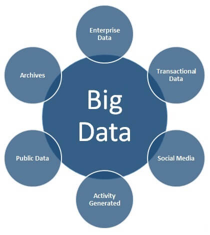

Large information alludes to a lot of information that is troublesome or cumbersome to store or procedure with a standard information the executives device or application. Or on the other hand just to bring the understandings closer, don't manage them on a customary PC alone through a straightforward database. One of the highlights of the "large information" field is the utilization of a few PCs to share the necessary works.
Enormous information is a colossal and exceptionally immense assortment of information in its different types of words, pictures, voice messages, and so forth. You can envision that the volume of information in the advanced world arrived at 4.4 zettabytes (4.4 trillion gigabytes) in 2013, and it is normal that the size of this information will arrive at 44 zite In 2020, it will arrive at around 180 zettabytes by 2025, as indicated by a recent report by the International Data Corporation.
Huge information is vital as it offers a high upper hand to organizations in the event that it can profit by them and procedure them since it gives a more profound comprehension of its clients and their prerequisites and this assists with taking proper and fitting choices inside the organization in an increasingly powerful manner, in light of data removed from client databases and accordingly increment proficiency and benefit and decrease misfortunes , Utilizing the methods and apparatuses of huge information investigation, Wal-Mart had the option to improve the aftereffects of scanning for its items online by 10-15%, while in a report by Mackenzie - a pioneer in the field of business counseling - that the wellbeing segment in the United States had been utilizing the procedures of large information examination adequately and productively It has created in excess of 300 million US dollars in yearly wellbeing financial plan surpluses, 66% of it because of a 8% decrease in spending costs.